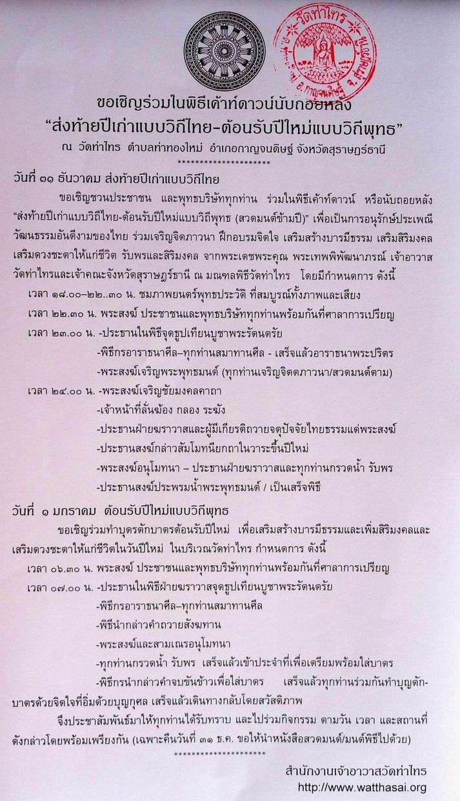

|
ขอเชิญร่วมในพิธีเค้าท์ดาวน์นับถอยหลัง |
|
ขอเชิญชวนประชาชน และพุทธบริษัททุกท่าน ร่วมในพิธีเค้าท์ดาวน์ หรือนับถอยหลัง "ส่งท้ายปีเก่าแบบวิถีไทย-ต้อนรับปีใหม่แบบวิถีพุทธ (สวดมนต์ข้ามปี)" เพื่อเป็นการอนุรักษ์ประเพณี วัฒนธรรมอันดีงามของไทย ร่วมเจริญจิตภาวนา ฝึกอบรมจิตใจ เสริมสร้างบารมีธรรม เสริมสิริมงคล เสริมดวงชะตาให้แก่ชีวิต รับพรและสิริมงคล จากพระเดชพระคุณ พระเทพพิพัฒนาภรณ์ เจ้าอาวาสวัดท่าไทรและเจ้าคณะจังหวัดสุราษฎร์ธานี ณ มณฑลพิธีวัดท่าไทร
 ของสำคัญที่ควรติดมือไปด้วย.- � สิ่งที่ทุกท่านควรนำไปด้วย เพื่อใช้ในพิธีเค้าท์ดาวน์ หรือนับถอยหลัง "ส่งท้ายปีเก่าแบบวิถีไทย-ต้อนรับปีใหม่แบบวิถีพุทธ (สวดมนต์ข้ามปี)" ในครั้งนี้ก็คือ หนังสือมนต์พิธี ซึ่งหาซื้อได้ตามศูนย์หนังสือ ร้านสังฆภัณฑ์ ร้านขายหนังสือทั่วไป เล่มใหญ่ ราคาเล่มละ ๔๐ บาท, เล่มเล็ก ๓๐ บาท ทั้ง ๒ ขนาด จำนวนหน้า และข้อความเดียวกันทุกประการ แต่เล่มขนาดเล็ก ตัวอักษรจะเล็กกว่า สำหรับท่านที่มีจิตศรัทธา ประสงค์จะบริจาคหนังสือดังกล่าว เพื่อเป็นธรรมทาน สร้างบุญบารมีธรรม และเพื่อเป็นการแบ่งปัน ช่วยเหลือ อนุเคราะห์ให้แก่ท่านที่ไม่มี หรือมีแต่ลืมนำไป ได้เปิดอ่านและสวดมนต์ข้ามปีด้วยกันในครั้งนี้ โดยขอให้ท่านที่มีจิตศรัทธาได้โปรดเขียนชื่อ นามสกุลผู้บริจาค / ผู้สร้าง ลงในหน้าแรกของหนังสือ (ซึ่งผู้จัดพิมพ์ได้เตรียมช่องว่างไว้ ๑ หน้า) แล้วนำไปบริจาคได้ในวันที่ ๓๑ ธันวาคม ที่จะถึงนี้ หรือจะส่งไปบริจาคไว้ล่วงหน้าก็ได้ โดยจ่าหน้าถึง... พระมหาบุญโฮม
ปริปุณฺณสีโล (ขออภัย.- เพื่อให้เกิดบุญกุศลเต็มที่ จึงของดรับบริจาคเป็นเงิน เพราะอาจก่อเกิดข้อครหา และไม่สะดวกแก่การจัดการ)
ข้อมูลที่ควรอ่านเพิ่มเติม.- **************************
กลับไปหน้า
Web วัดท่าไทร |